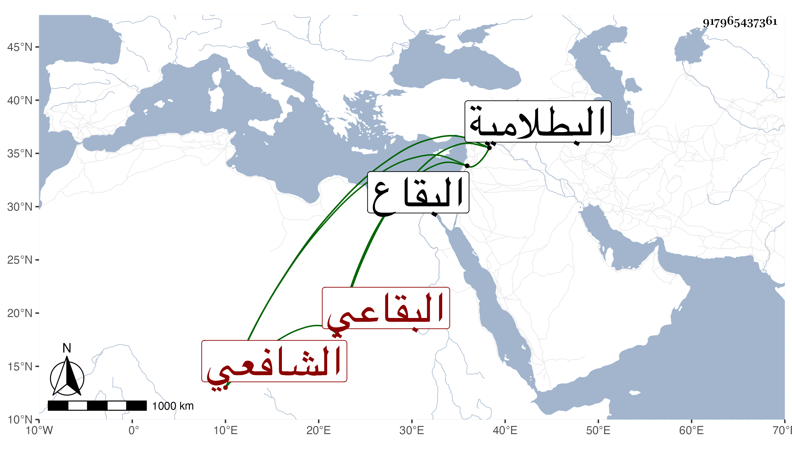

0902Sakhawi.DawLamic.ITO20230111-ara1.EIS1600.917965437361
Biography ID: 917965437361
331
محمد بن عثمان بن إسرائيل الشمس أبو الجود ويقولونها بلجود بفتح الموحدة كلمة واحدة الخرباني البقاعي الشافعي مؤدب الأطفال بقرية خربة روحاء من البقاع . ولد قبل سنة سبعين وسبعمائة بالخربة وحفظ القرآن واشتغل بالفقه والقراآت وتصدى لتعليم الأبناء فانتفع به في حفظ القرآن وغيره ، وذكر البقاعي أنه ممن قرأ عنده وأنه مات بالخربة في ذي الحجة سنة خمسين .
